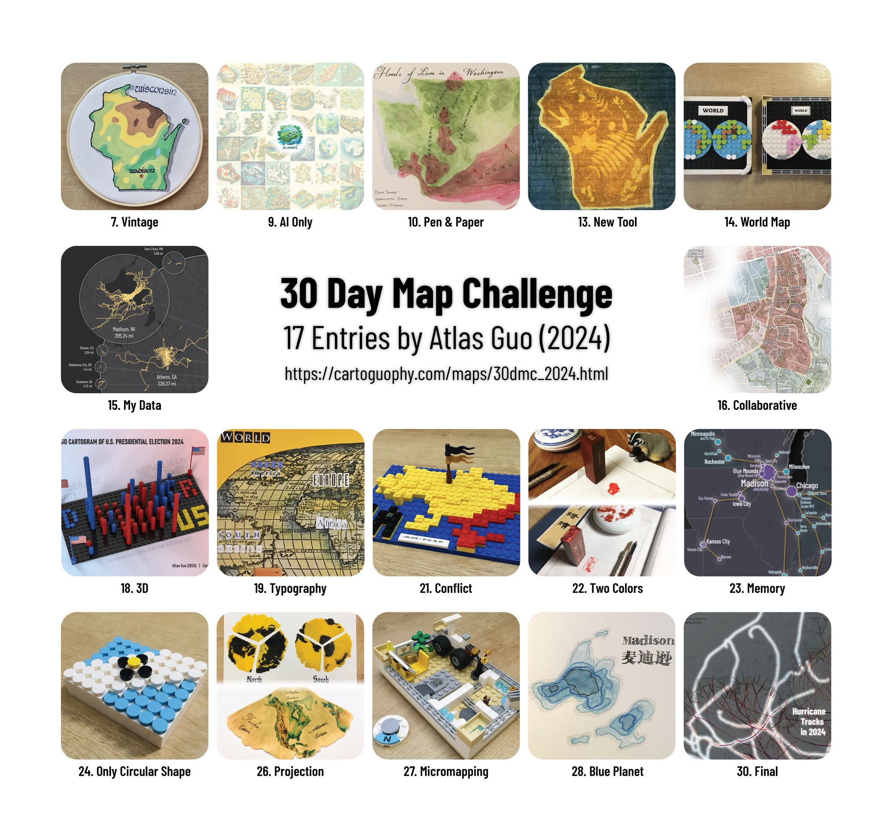

30 Day Map Challenge in 2024
17 entries posted on
X, Bluesky & LinkedIn
with
#30DayMapChallenge
in November 2024

30 Day Map Challenge is a daily social mapping project happening every November. The idea is to create maps based around different themes each day of November using the hashtag #30DayMapChallenge.
I knew this annual event for years, but didn't participate it before due to my packed schedule in November. I also didn't plan for it this year, until I realized some ways to participate (but it's already mid-November):
(1) wrapping up some unfinished mapping projects;
(2) updating some existing maps with updated dataset;
(3) sharing some personal maps that haven't been published;
(4) trying some random crafts and LEGO mapping.
I ended up covering 17 days (some have multiple entries):
 Download Compressed ImageDownload Full-Size Image
I posted them using #30DayMapChallenge on LinkedIn with detailed introduction (and on Instagram without such hashtag), and simplified version on X and Bluesky due to the length limit.
As many cartographers are recently building up our online community on Bluesky, I am embedding my relevant Bluesky posts here, with LinkedIn links attached (more detailed introduction). Note that some images are the original version with potential mistakes, while the updated versions are updated on the corresponding webpages.
Day 7
Detailed post on LinkedIn
#30DayMapChallenge Day 7 (#Vintage) - Overdue: It's my first canvas painting: on top of an artistic (inaccurate) #topographic map, I added some #medieval #calligraphy🖌️. This would be my last add-on map to this year's #30DMC, dedicated to my beloved land of #Wisconsin🐄, and #Irish/#Celtic at heart☘️.
— Atlas Guo (@cartoguophy.bsky.social) December 1, 2024 at 7:51 AM
[image or embed]
Day 9
Detailed post on LinkedIn
I didn't plan to participate in #30DayMapChallenge due to packed schedule, but after seeing so many AI-generated maps on Day 9, I'd love to share my Instagram account "@ai.maps" in which I used to daily post such maps. Maybe I can resume it some day: cartoguophy.com/maps/ai_maps.html
— Atlas Guo (@cartoguophy.bsky.social) November 9, 2024 at 4:09 PM
[image or embed]
Day 10
Detailed post on LinkedIn
#30DayMapChallenge Day 10 (Pen and Paper) - Overdue: This #watercolor painting "Floods of Lava in Washington" was finished during @nacis.bsky.social 2024 Meeting's "Atlas-At-A-Conference" activity. To know more and view this full atlas themed FLOW, visit www.guerrillacartography.org/atlas-in-a-day.
— Atlas Guo (@cartoguophy.bsky.social) November 29, 2024 at 12:47 PM
[image or embed]
Day 13
Detailed post on LinkedIn
#30DayMapChallenge Day 13 (A New Tool) - Overdue: This is a #Wisconsin Map on solar printed cotton bandana, made with local flowers and fronds during a bike-and-craft activity, organized by Cap City Cyclist, a Madison's cycling advocacy group. Read More: cartoguophy.com/maps/bandana...
— Atlas Guo (@cartoguophy.bsky.social) November 29, 2024 at 11:09 PM
[image or embed]
Day 14
Detailed post on LinkedIn
Sorry for the frequent posts, but I cannot help upgrading my #30DayMapChallenge (Day 14) #LEGO world map quickly into a dual of physical and continental maps 🗺
— Atlas Guo (@cartoguophy.bsky.social) November 14, 2024 at 7:06 PM
[image or embed]
Day 15
Detailed post on LinkedIn
#30DayMapChallenge Day 15 (My Data). Though it's behind schedule, I took this opportunity to pick up an unfinished map, and accomplished it with updated data: "Mapping My Biking Journey with Distance of Distinct Traveled Paths". All circled maps have the same scale.(cartoguophy.com/maps/biking....)
— Atlas Guo (@cartoguophy.bsky.social) November 17, 2024 at 9:18 AM
[image or embed]
Day 16
Detailed post on LinkedIn
#30DayMapChallenge Day 16 (Collaborative) - Overdue: This is a one-day mapping project for my #UGA colleagues' sustainability grant proposal application. It overlaps the bike lanes and greenway trails with crime rate information around the #UniversityOfGeorgia campus at #Athens, GA.
— Atlas Guo (@cartoguophy.bsky.social) November 30, 2024 at 9:00 PM
[image or embed]
Day 18
Detailed post on LinkedIn
#30DayMapChallenge Day 18 (3D): Sharing this 3D rendered graphic of #LEGO #cartogram of #USPresidentialElection 2024, with two photos of the physical map. View full images: cartoguophy.com/maps/electio.... (Wow, I didn't know Bluesky can send out two posts at once!)
— Atlas Guo (@cartoguophy.bsky.social) November 18, 2024 at 8:31 PM
[image or embed]
#30DayMapChallenge Day 18 (3D): Sharing this physical #LEGO #cartogram of #USPresidentialElection 2024. View full images: cartoguophy.com/maps/electio...
— Atlas Guo (@cartoguophy.bsky.social) November 18, 2024 at 8:31 PM
[image or embed]
Day 19
Detailed post on LinkedIn
#30DayMapChallenge Day 19 #Typography: A #collage world map using old magazines during a fun workshop organized by Stephen @latlong.shop (latlong.shop).
— Atlas Guo (@cartoguophy.bsky.social) November 19, 2024 at 11:42 PM
[image or embed]
Day 21
Detailed post on LinkedIn
#30DayMapChallenge Day 21 (Conflict): A #LEGO map of #Ukraine in raised terrain, with bloodied southeastern territory invaded by Russia. (each plate represents 60*60 sq km; the flagged site is Kiev)
— Atlas Guo (@cartoguophy.bsky.social) November 21, 2024 at 11:24 PM
[image or embed]
Day 22
Detailed post on LinkedIn
#30DayMapChallenge Day 22 (2 colors): The two seals are #Wisconsin and my hometown Zibo (a Chinese city, with county boundaries). Both are not recent work but haven't been publicly shared. If the paper's color is included, there are only two colors.😅 #sealcarving #篆刻
— Atlas Guo (@cartoguophy.bsky.social) November 23, 2024 at 7:52 AM
[image or embed]
Day 23
Detailed post on LinkedIn
#30DayMapChallenge Day 23 (Memory): Picking up another unfinished map, and finished this draft of personal footprint in the U.S. The making process really reminds me of a lot of memories with family and friends during these trips. So much fun and joy!😊View full image: cartoguophy.com/maps/footpri...
— Atlas Guo (@cartoguophy.bsky.social) November 25, 2024 at 9:53 AM
[image or embed]
Day 24
Detailed post on LinkedIn
#30DayMapChallenge Day 24 (Only Circle): Inspired by the #Madison City Flag Map by Stephen @latlong.shop (latlong.shop), I used #LEGO round tiles to make a 3D version, with WI state capitol dome, capitol building, isthmus, and two lakes, raised to different heights.
— Atlas Guo (@cartoguophy.bsky.social) November 25, 2024 at 11:47 PM
[image or embed]
Day 26
Detailed post on LinkedIn
Detailed post on LinkedIn#30DayMapChallenge Day 26 (Map Projection): On my commute (in front of Fresh Market), I saw many fallen #ginkgo leaves, whose golden hue was incredibly beautiful. I collected some and used their fan-shaped form to draw two maps of the Northern and Southern Hemispheres, using orthographic projection.
— Atlas Guo (@cartoguophy.bsky.social) November 27, 2024 at 6:53 AM
[image or embed]
#30DayMapChallenge Day 26 (Map Projection) - Continued: Since I already got fan-shape #ginkgo leaves, why not make a conic projection map, which naturally has a fan shape? Here comes a topographic map of North America, using Albers equal area projection.🌎
— Atlas Guo (@cartoguophy.bsky.social) November 27, 2024 at 10:10 PM
[image or embed]
Day 27
Detailed post on LinkedIn
#30DayMapChallenge Day 27 (Micromapping): I was planning to make an apartment floor plan map, but it turned out to be more like a 3D room model instead of a map. I only have very limited #LEGO elements with me and I already tried my best, so please do not laugh at the weird bike🚲😅
— Atlas Guo (@cartoguophy.bsky.social) November 28, 2024 at 7:45 AM
[image or embed]
Day 28
Detailed post on LinkedIn
#30DayMapChallenge Day 28 (Blue Planet): This #watercolor painting of bathymetric Lake Mendota and Monona in #Madison was made in spring 2024, as the cover of graduation cards for my UW-Madison friends. I think it would meet today's prompt of lakes.
— Atlas Guo (@cartoguophy.bsky.social) November 28, 2024 at 7:22 PM
[image or embed]
Day 30
Detailed post on LinkedIn
#30DayMapChallenge Day 30 (Final Map): NOAA NHC announced the official end of 2024 Atlantic #Hurricane Season, so I updated my Historical Hurricane Tracks map, with 18 new storms and 5 labels of landfall ones: Beryl, Debby, Francine, Helene, Milton. Original images: cartoguophy.com/maps/histori...
— Atlas Guo (@cartoguophy.bsky.social) December 1, 2024 at 12:07 AM
[image or embed]